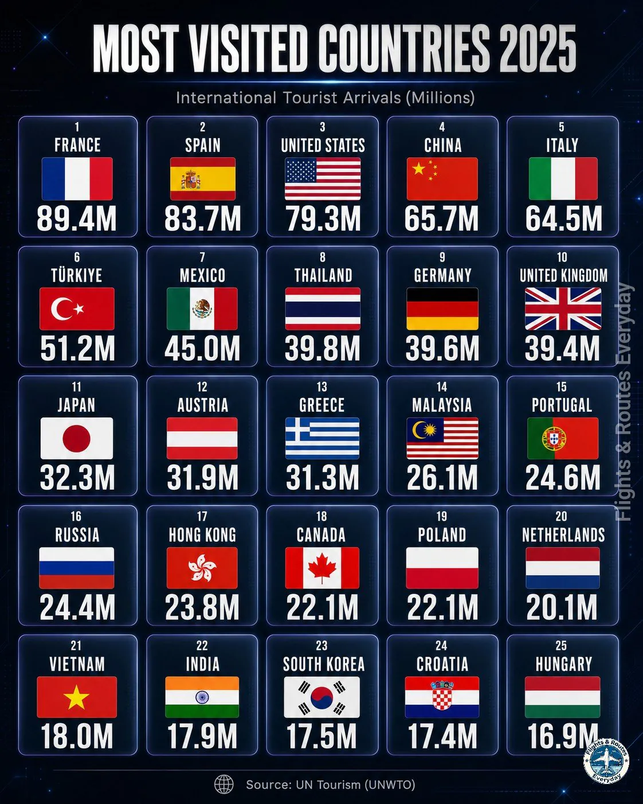

인도가 의외로 순위가 낮은듯

인도가 의외로 순위가 낮은듯
관광이 주가 아닌 나란데 베트남이랑 비빌 정도면 존나 선방 아닌가
딱히 관광자원을 내세우던 나라도 아닌 코딱지만한 나라가 세계 23위면 존나 선방한거지
한류는 대박 맞음
미국, 일본 정도 제외하면 한국이 대중문화 영향력 상위권임
예를 들어 미국에서 한국 화장품이 프랑스 화장품 점유율을 넘어서기 시작했는데 프랑스 사람들은 ㄹㅇ 충격받을만한 소식임
10년 전에 우리나라 존재도 모르거나 북한이랑 구별 못하던 인간들이 대부분인데 저정도면 개대박친 거 아니냐
난 인도가 생각보다 존나 높은거같은데
우리나라 여행 유튜버들 인도 많이 가길래 다른 사람들도 많이 갈줄
유튜버가 많이 간다=일반인이 가기 힘드니 어그로 잘 끌린다.
비싼 여행 하는 거 아니면 유튜버들은 일본 오지 시골이나 남들 모르는 곳들 돌아다님. 유튜버를 평균으로 잡으면 안돼...
ㄹㅇ 가지 말라고 전세계에서 경고 때릴텐데 저 정도 가는 거면 많이 가는 거지
의외로 일본이 11위 밖에 안됨???
전세계입장에서 멀리떨어진 일본이 11이면 선방한거지
멀리떨어진 중국 4위는 어케 설명?
저것도 한국중국 관광객 덕일껄 ㅋㅋㅋㅋ
한국인 숫자가 크지 ㅎㅎ
생각보다 높네
UN이 ㅈ사기긴하네
대륙간 여행으로따지면 어떻게되려나
EU겠지
Eu는 뭐 사실상 국가내이동이나 다름없으니
미국이 1등이네 미쳤는데
일본 32밀리언 중에 10밀리언이 한국인일듯
2025라고 하는데 정작 저 수치는 2019 코로나 직전 통계임... 서방의 제재를 받는 러시아가 저정도가 나올 수 없음. 실제 수치는 2025년기준 5토막나서 400-500만명 언저리네.
멕시코가 높은 건 의외네
멕시코는 매년 북미 유럽에서 오는 휴양 관광객이 많아서
칸쿤이 있다 안하요
1600만명 전후였는데
코시국때 8-900만으로 빠졌다가 회복한듯?
2025 2026이 어떻게 나올지는 좀 궁금하긴 하다
러시아는 최근 젊은 북한 남자들이 많이 가는거 같던데 그래서 16위인가보네
일본이 11위라고?????? 미친... 교토 오사카만가도 사람 존나 미어져서 돌았다고 생각했는데 그게 11위??
육로로 연결된 유럽 국가들끼리 올린 수치는 인플레라고 봐야 함
인도는 똥 닦은 손으로 음식 만드는데 저정도나 간다는 게 신기하네
와 한국 많이 올라왔네
서울가면 외국인 ㅈㄴ 많던데 아직도 23위 ..?
인도는 자국민들도 탈출하려고 피터지게 공부하는데 뭐하러 돈주고 거길 들어가 ㅋㅋ
우리나라 왜오지? 맨날 봐서그런가 딱히 우리나라만의 매력은 모르겠음...
일본가니까 진짜 전세계 인종들 다있던데
인도보다 뒤쳐지는 건 조금 문제라고 생각합니다.
요즘 한류 대박났다 하던데 좆밥이었네..